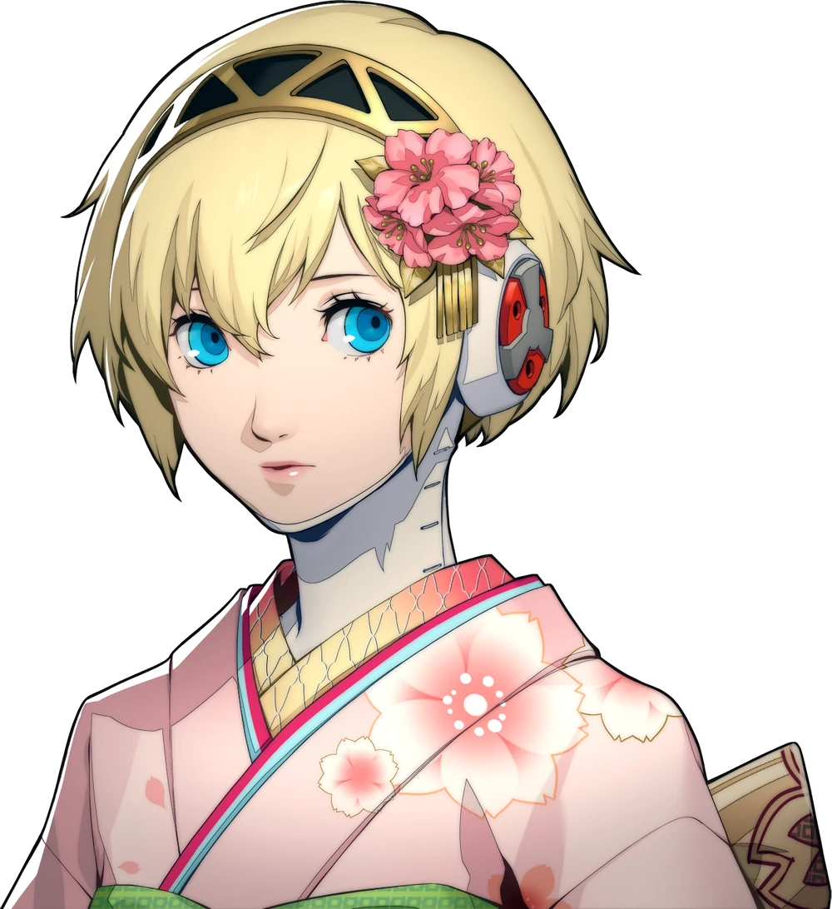
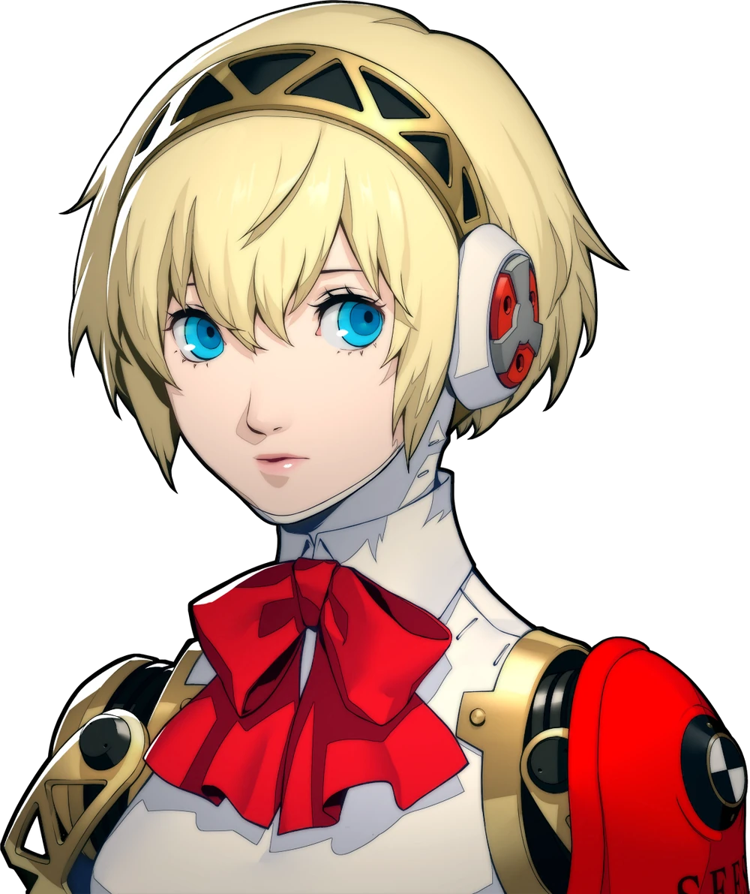
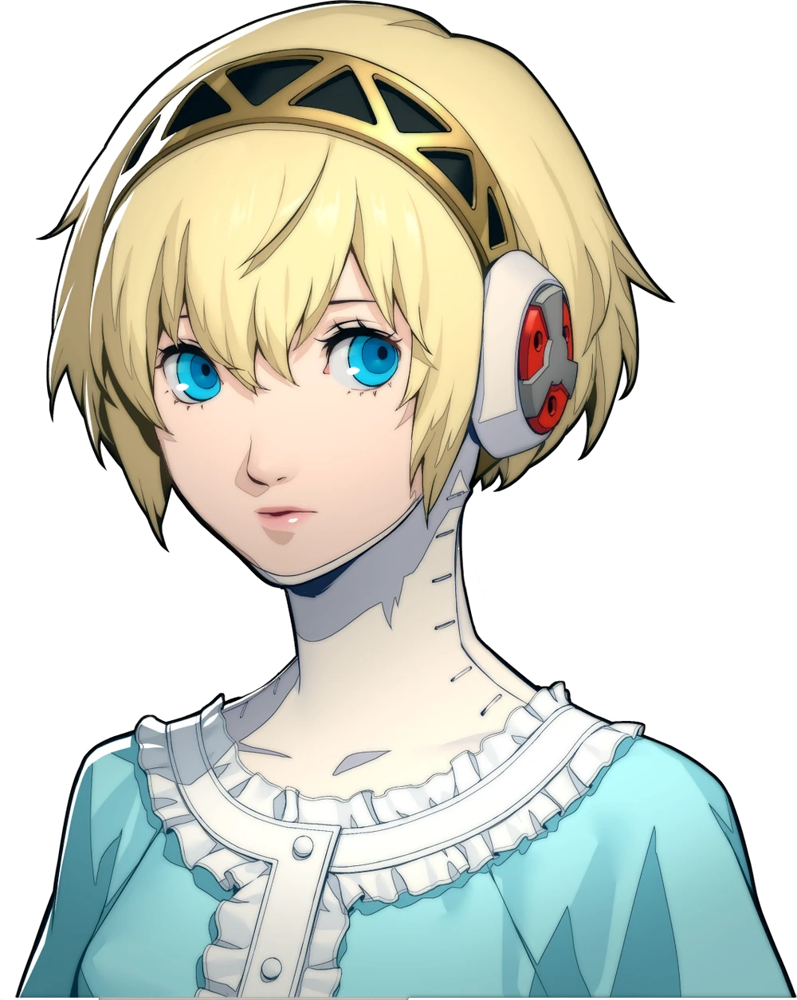
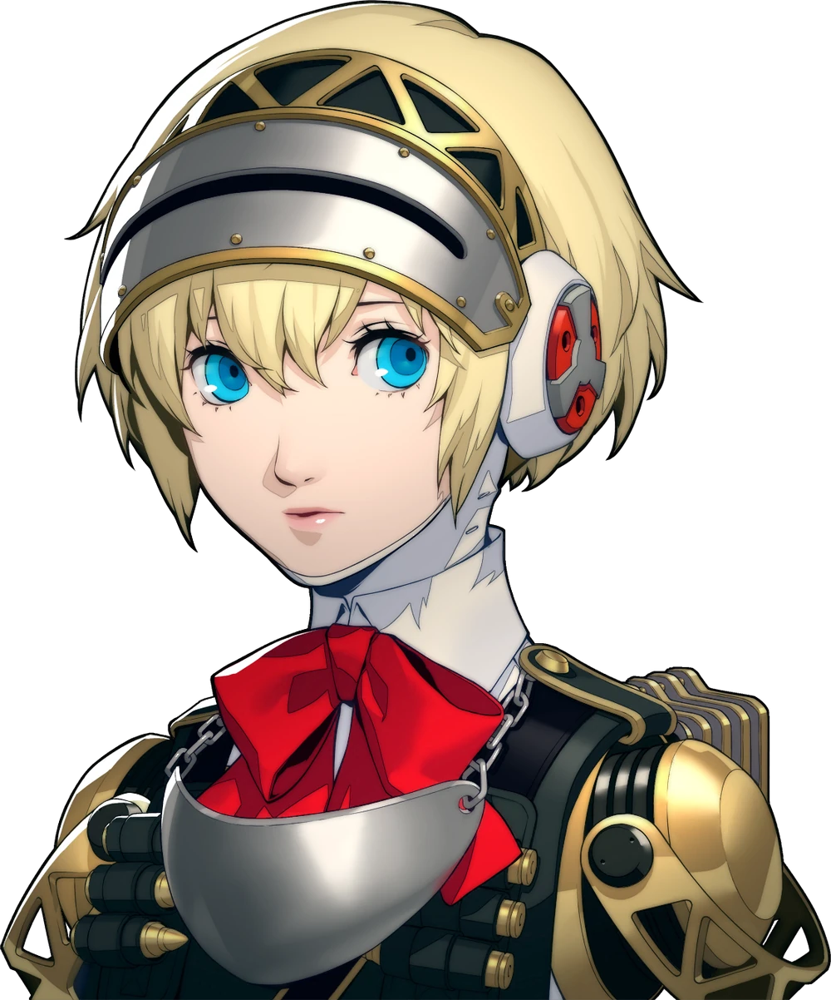
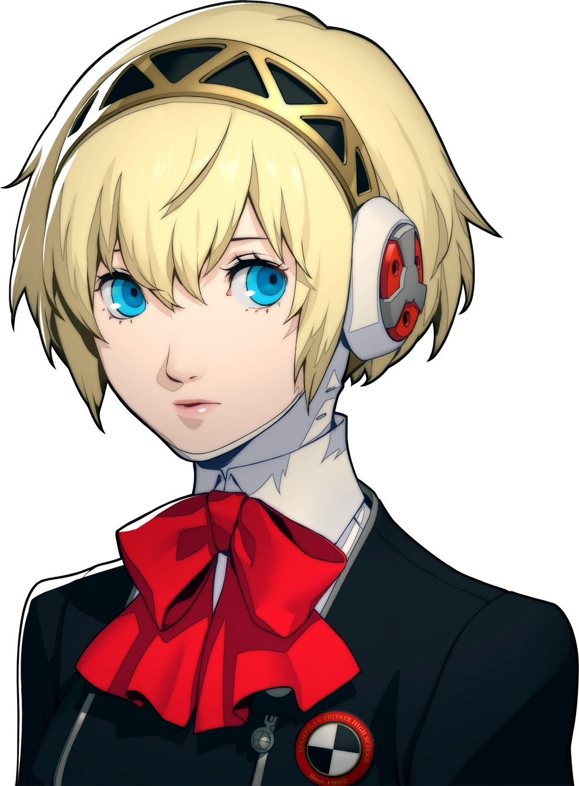
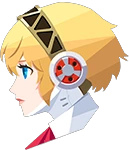
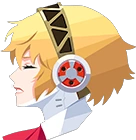
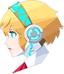
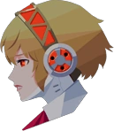
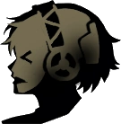

Aigis
FanPage
Pagina creada por un
fan de Persona

Pagina creada por un
fan de Persona

Traje utilizado durante la celebracion de año nuevo dentro del juego.

Traje utilizado durante las infiltraciones dentro del Tartaro.

Traje utilizado en la primera interaccion con Aigis.

Traje utilizado durante los eventos de The Answer.

Traje correspondiente al instituro Gekkoukan.

Aigis es un androide anti-Sombra (Anti-Shadow Suppression Weapon), creada para combatir a las Sombras que aparecen durante la Hora Oscura.
Aigis fue desarrollada por el Grupo Kirijo, una poderosa corporación responsable de investigar las Sombras y el fenómeno de la Hora Oscura.
Inicialmente, Aigis es una robot obediente, pero su devoción al protagonista la lleva a desarrollar emociones humanas.

Su falta de habilidades sociales es evidente, pero su amabilidad y su dedicación inquebrantable a sus amigos son rasgos distintivos.
Su viaje emocional es uno de los aspectos más maravillosos del personaje, pues ella tiene que aprender qué es el significado de vivir.
A lo largo de la saga, Aigis se va haciendo más humana, aunque siempre mantendrá su naturaleza artificial.




